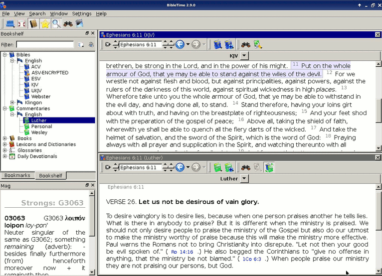

This is what a typical BibleTime session looks like:
|  |
You can easily see the different parts of the application. The top left window is used to open installed works in the Bookshelf tab, and with the Bookmarks tab you can manage your bookmarks. The little "Mag" window below the Bookshelf is used to display extra information that is embedded in documents. When you move your mouse over a footnote marker, for example, then the Mag will display the actual content of the footnote. The toolbar gives you quick access to important functions, and the Desk on the right side is where you do your real work.
Sellomp pizh ouzh kement lodenn eus an arload unan hag unan.